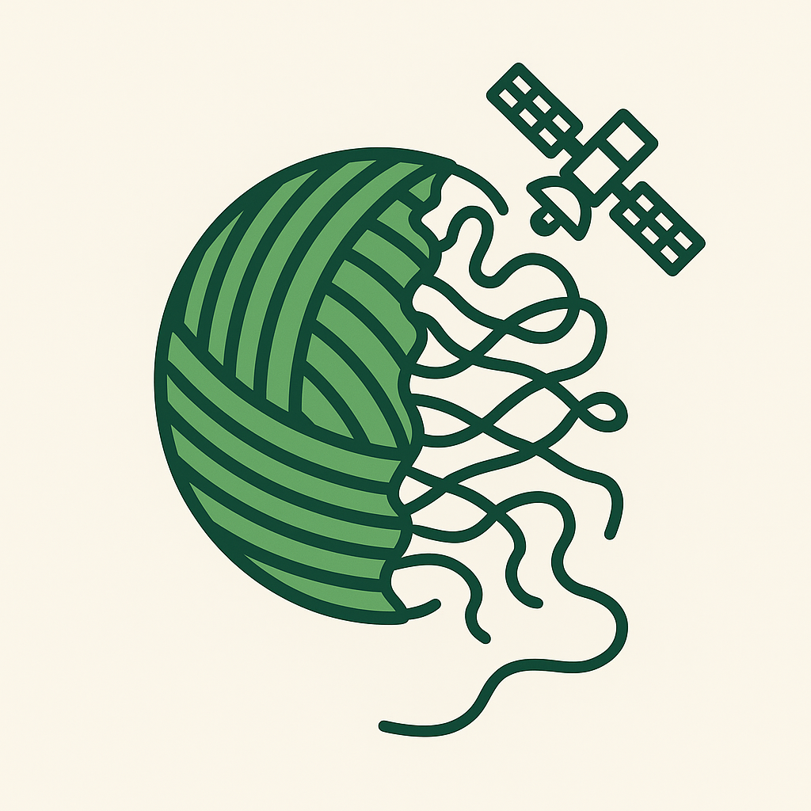

Education
Master of Science, Geography (August 2026)
University of Tennessee, Knoxville
Focus: Remote Sensing and Geospatial Software Engineering
Bachelor of Science, Geographic Information Science & Technology, Magna Cum Laude, 2024

As a Graduate Teaching Assistant at the University of Tennessee, Knoxville, I guide students through remote sensing analytics and prepare future pilots for FAA Part 107 certification. My research integrates multispectral imagery, Python-driven automation, and ecological expertise to monitor land change and environmental health.
Current thesis work: Satellite Anthrax Surveillance in Texas, USA.

Plaknit is the open notebook for my Master's thesis, where I record my PlanetScope processing decisions, test, and QA step as I map anthrax-prone rangelands. The repo packages the GDAL + Orfeo Toolbox workflows I use so collaborators can replay the mosaics or adapt the code to new landscapes.
Key plaknit features:

At Oak Ridge National Laboratory I was part of an interdisciplinary team applying AI and machine learning to maritime surveillance, building deep learning pipelines for vessel detection in commercial satellite imagery. On campus, I help keep GIS labs running, assist in UAS field missions, and prototype tools that cut hours from research workflows.
I design labs that mirror the expectations of professional remote sensing teams. Recent sessions walk students through Google Earth Engine workflows, TensorFlow model evaluation, and UAS mission planning. Guest lectures across the department focus on natural hazards, advanced sensing techniques, and bringing data storytelling into the classroom.
See teaching highlightsPublished
In preparation
Master of Science, Geography (August 2026)
University of Tennessee, Knoxville
Focus: Remote Sensing and Geospatial Software Engineering
Bachelor of Science, Geographic Information Science & Technology, Magna Cum Laude, 2024
FAA Remote Pilot (Small UAS)
Certificate No. 5217840
Valid through September 2027
ASPRS Mid-South Best Student Presentation (2026)
UTK Graduate Student Senate Travel Award (2026)
Bruce Ralston Geospatial Achievement Award (2025)
TN View Remote Sensing Fellow (2025)
UT GIS&T Student of Distinction (2024)
AAG, ASPRS, Southeastern Division of the AAG
UTK GeogGrads, Events Committee Representative
UTK Drylands and Remote Sensing for Conservation Lab (DARC), Managing Member